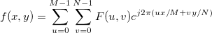

2D IFFTは、2次元の離散フーリエ変換(2D IDFT)の高速なアルゴリズムで、次式のように定義されます。

これは2次元配列データに対して行われ、そのスペクトルから2D信号を再構成することができます。しかし、2D FFT および 2D IFFT ダイアログボックスのオプションが適切に設定されている場合のみ、正確に再構成されます。もし、 DC成分を中央に移動 が、 fft2 ダイアログでチェックされている場合、 ifft2 ダイアログで、移動を元に戻すにチェックを付ける必要があります。逆に、DC成分を中央に移動にチェックがついていない場合、移動を元に戻すのチェックを付けません。
2D IFFTを使用するには
|
このセクションのトピック: |